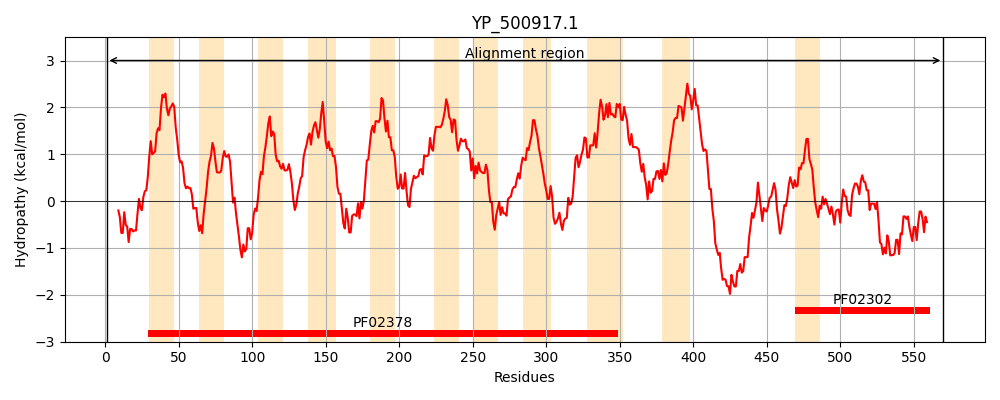
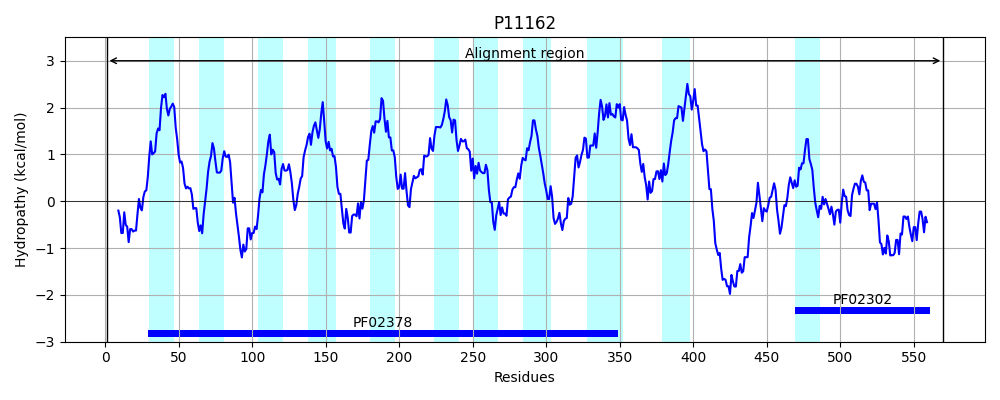
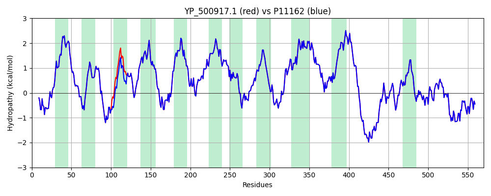

Hit Accession: P11162
Hit TCID: 4.A.3.1.1
Hit Description: gnl|BL_ORD_ID|9023 gnl|TC-DB|P11162|4.A.3.1.1 PTS system, lactose-specific IIBC component (EIIBC-LAC) (Lactose- permease IIBC component) (Phosphotransferase enzyme II, BC component) (EC 2.7.1.69) (EII-LAC) - Staphylococcus aureus.
Mach Len: 570
e:0.000000
Query TMS Count : 11
Hit TMS Count: 11
TMS-Overlap Score: 10.550000
Predicted Substrates:CHEBI:6353;alpha-lactose
BLAST Alignment:
Score: 2889 , Bit scores: 1117 bits, E-value: 0.0e+00, Alignment length: 570, Percentage identity: 100
Query: 1 MMQKLIAQIEKGKPFFEKLSRNIYLRAIRDGFISAMPVILFSSIFLLIAYVPNIFGFKWDKGMEAILMKPYNYTMGLVAFLVAGTTAKSLTDSFNRKLESTNQINFISTMLAAMCGFLFLASDPAKDGGFLSAFMGTKGLLTAFLSAFVTVIVYNFCVKRNITIKMPKEVPPNISQVFKDLIPFSAVIIILYALDLVIRNSFKSNVAEGILKLFEPLFTAADGWIGVTIIFGAFALFWFVGIHGPSIVEPAIAAITYANIEANFKLLQAGEHADKIITSGTQMFIVTFGGTGATLVVPFMFMWMTKSKRNKAIGRASVVPTFFGVNEPILFGAPLVLNPVFFIPFVLAPIVNVWIFKLFVEVLGMNSFSVNLPWTTPGPLGIIMGTGFGLWSFVLAITLIVVDIIIYYPFLKVYDSEILDEEEGRKESNSDLKEKVAANFDTKKADSILAASGVSDDAAKASNITEQTNVLVLCAGGGTSGLLANALNKAAEEYHVPVKAAAGGYGAHMDIMKEYQLIILAPQVASNYEDIKQDTDRLGIKLAKTQGAEYIKLTRDGQAALDFVQQQFEN 570
MMQKLIAQIEKGKPFFEKLSRNIYLRAIRDGFISAMPVILFSSIFLLIAYVPNIFGFKWDKGMEAILMKPYNYTMGLVAFLVAGTTAKSLTDSFNRKLESTNQINFISTM AAMCGFLFLASDPAKDGGFLSAFMGTKGLLTAFLSAFVTVIVYNFCVKRNITIKMPKEVPPNISQVFKDLIPFSAVIIILYALDLVIRNSFKSNVAEGILKLFEPLFTAADGWIGVTIIFGAFALFWFVGIHGPSIVEPAIAAITYANIEANFKLLQAGEHADKIITSGTQMFIVTFGGTGATLVVPFMFMWMTKSKRNKAIGRASVVPTFFGVNEPILFGAPLVLNPVFFIPFVLAPIVNVWIFKLFVEVLGMNSFSVNLPWTTPGPLGIIMGTGFGLWSFVLAITLIVVDIIIYYPFLKVYDSEILDEEEGRKESNSDLKEKVAANFDTKKADSILAASGVSDDAAKASNITEQTNVLVLCAGGGTSGLLANALNKAAEEYHVPVKAAAGGYGAHMDIMKEYQLIILAPQVASNYEDIKQDTDRLGIKLAKTQGAEYIKLTRDGQAALDFVQQQFEN
Sbjct: 1 MMQKLIAQIEKGKPFFEKLSRNIYLRAIRDGFISAMPVILFSSIFLLIAYVPNIFGFKWDKGMEAILMKPYNYTMGLVAFLVAGTTAKSLTDSFNRKLESTNQINFISTMQAAMCGFLFLASDPAKDGGFLSAFMGTKGLLTAFLSAFVTVIVYNFCVKRNITIKMPKEVPPNISQVFKDLIPFSAVIIILYALDLVIRNSFKSNVAEGILKLFEPLFTAADGWIGVTIIFGAFALFWFVGIHGPSIVEPAIAAITYANIEANFKLLQAGEHADKIITSGTQMFIVTFGGTGATLVVPFMFMWMTKSKRNKAIGRASVVPTFFGVNEPILFGAPLVLNPVFFIPFVLAPIVNVWIFKLFVEVLGMNSFSVNLPWTTPGPLGIIMGTGFGLWSFVLAITLIVVDIIIYYPFLKVYDSEILDEEEGRKESNSDLKEKVAANFDTKKADSILAASGVSDDAAKASNITEQTNVLVLCAGGGTSGLLANALNKAAEEYHVPVKAAAGGYGAHMDIMKEYQLIILAPQVASNYEDIKQDTDRLGIKLAKTQGAEYIKLTRDGQAALDFVQQQFEN 570 | Protein Hydropathy Plots: |
|---|
|  |  |
Pairwise Alignment-Hydropathy Plot:
|
|---|
|  |